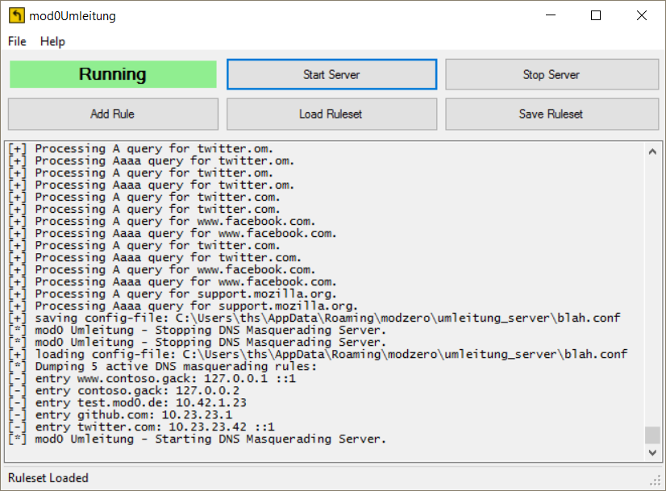
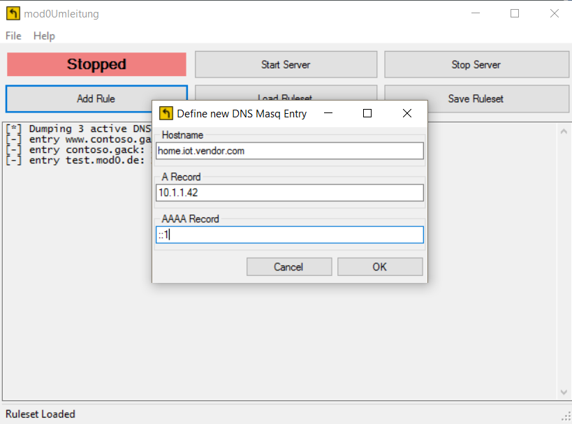

DNS Masquerading Server for Windows
Eine Deutsche Version befindet sich weiter unten - German version below
mod0Umleitung runs on Windows and provides a DNS server for local networks. mod0Umleitung is a forwarding DNS server for A and AAAA records. Different record types will follow in future releases. Its main purpose is the masquerading of external DNS hostnames. mod0Umleitung provides a graphical user-interface to set up DNS masquerading rules on windows systems, just like the DNS subsystem of dnsmasq, that allows the modification of hostname to IP-address mappings via /etc/host on BSD and Linux systems. Caching of DNS requests and responses is currently not supported.

mod0Umleitung allows the modification of DNS masquerading rules during runtime via the CTRL-N shortcut or a click on "Add Rule". Active masquerading rules can be saved to file for later use (STRG-S or "Save Ruleset"). mod0Umleitung uses an XML database that can be edited using your favorite text-editor (e. g. for use with the command line tool).

XML databases are stored in
%AppData%\modzero\umleitung_serverby default. The format of the XML is pretty straightforward:
<?xml version="1.0" encoding="utf-8"?>
<DNSMasqConfig xmlns:xsd="http://www.w3.org/2001/XMLSchema" xmlns:xsi="http://www.w3.org/2001/XMLSchema-instance">
<DNSMasqEntries>
<DNSMasqHost name="www.contoso.gack" a="127.0.0.1" aaaa="::1" />
<DNSMasqHost name="contoso.gack" a="127.0.0.2" />
<DNSMasqHost name="test.mod0.de" a="10.42.1.23" />
</DNSMasqEntries>
</DNSMasqConfig>
mod0Umleitung can be used for doing security analyses of various network-clients and embedded systems that communicate with the Internet. The idea of mod0Umleitung, the DNS masquerading server for Windows, grew during setting up a Windows based MITM-setup and rogue Access-Point for mobile and IoT security-assessments.
The tool is open-sourced on https://modzero.github.io/mod0Umleitung/ and respectively https://github.com/modzero/mod0Umleitung.
mod0Umleitung has been initiated by Thorsten Schröder (on github) of modzero in 2017.
mod0Umleitung is free and open source software. The software is published under the BSD 3-Clause License, which has been extended by our Non-Military Usage clause.
A signed installer can be downloaded from Github at https://modzero.github.io/mod0Umleitung/releases/setup_mod0Umleitung_gui.msi. The installer and executable programs have been signed with the following certificate:
Issued to: modzero GmbH
Issued by: DigiCert EV Code Signing CA (SHA2)
Expires: Thu Oct 10 13:00:00 2019
SHA1 hash: 9CA607786293B016FC148FC0F09C23CD89BEB2BDIf you have trouble with using or deploying the software, please use the github platform and create issues or requests. To contact modzero, feel free to drop us an email at info ((at)) modzero [dot] ch or visit our website at http://www.modzero.ch.
mod0Umleitung ist eine für Windows entwickelte Software, und stellt einen DNS Server für lokale Netzwerke bereit. mod0Umleitung ist ein sog. Forwarding DNS Server für A und AAAA DNS-Records. Weitere Record-Types werden in zukünftigen Releases unterstützt. Der Hauptzweck der Anwendung ist das Maskieren von DNS Anfragen und Ergebnissen externer DNS Hostnamen. mod0Umleitung hingegen verfügt über eine grafische Benutzeroberfläche um die Regeln für das DNS-Masquerading auf Windows Systemen zu konfigurieren — so, wie es das DNS Subsystem von dnsmasq erlaubt, bestehende Hostname zu IP-Adress-Zuordnungen zu manipulieren, indem die Datei /etc/hosts auf BSD und anderen UNIX-Systemen entsprechend erweitert wird. Das Caching von DNS-Requests wird derzeit jedoch nicht unterstüzt.
mod0Umleitung erlaubt die Manipulation der DNS Masquerading Regeln zur Laufzeit via STRG-N Shortcut, oder einem Klick auf "Add Rule". Aktive Regeln können für eine spätere Verwendung gespeichert werden (STRG-S oder "Save Ruleset"). mod0Umleitung verwendet eine XML-Datenbank für die Regeln und Konfiguration, die mit einem Text-Editor der Wahl editiert werden kann - beispielsweise für die Verwendung mit dem Kommandozeilen-basierten tool.
Die XML Datenbanken werden standardmäßig im Verzeichnis
%AppData%\modzero\umleitung_servergespeichert. Das XML-Format ist leicht verständlich und selbsterklärend:
<?xml version="1.0" encoding="utf-8"?>
<DNSMasqConfig xmlns:xsd="http://www.w3.org/2001/XMLSchema" xmlns:xsi="http://www.w3.org/2001/XMLSchema-instance">
<DNSMasqEntries>
<DNSMasqHost name="www.contoso.gack" a="127.0.0.1" aaaa="::1" />
<DNSMasqHost name="contoso.gack" a="127.0.0.2" />
<DNSMasqHost name="test.mod0.de" a="10.42.1.23" />
</DNSMasqEntries>
</DNSMasqConfig>
mod0Umleitung kann für die Durchführung von Sicherheits-Analysen verschiedener Netzwerk-Clients und Embedded-Systems genutzt werden, die mit dem Internet kommunizieren. Die initiale Idee hinter mod0Umleitung, dem DNS Masquerading Server für Windows, wuchs wärend der Zusammenstellung eines Windows-basierten MITM- und Rogue Wifi Accesspoint Setups für Sicherheits-Tests mobiler Anwendungen und IoT-Geräte.
Das Werkzeug wurde quelloffen auf https://modzero.github.io/mod0Umleitung/ und respektive https://github.com/modzero/mod0Umleitung veröffentlicht.
mod0Umleitung wurde 2017 von Thorsten Schröder (github) von modzero ins Leben gerufen.
mod0Umleitung ist freie Open Source Software. Die Software wurde unter der BSD 3-Clause License veröffentlicht, welche um eine Non-Military-Use Klausel erweitert wurde.
Ein signierter Installer kann von der Open Source Plattform Github herunter geladen werden: https://modzero.github.io/mod0Umleitung/releases/setup_mod0Umleitung_gui.msi. Der Installer und die ausführbaren Programme wurden mit folgendem Zertifikat signiert:
Issued to: modzero GmbH
Issued by: DigiCert EV Code Signing CA (SHA2)
Expires: Thu Oct 10 13:00:00 2019
SHA1 hash: 9CA607786293B016FC148FC0F09C23CD89BEB2BDFür Support-Anfragen und Problemen bei der Handhabung der Software benutzen Sie bitte die Github-Plattform um entsprechende Issues und Requests anzulegen. Um modzero zu kontaktieren, schicken Sie einfach eine Email an info ((at)) modzero [dot] ch oder besuchen Sie die Webseite http://www.modzero.ch.